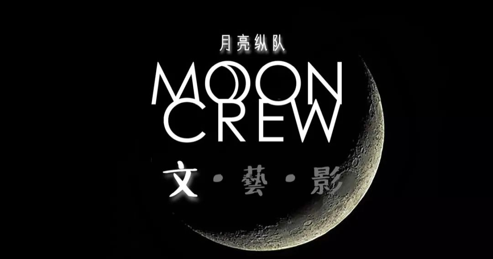

叶青：建议设立公共卫生安全副省长
原文链接 备份链接 非常时期，武汉成了全国人民挂念、祈福的城市。封城后，武汉人民的真实生活是什么样？ 随着疫情援助的展开，又有哪些容易忽略的问题？ 正和岛自1月26日起特别推出《叶青：我在武汉疫区的第N天》专栏。叶青是一位定居武汉40年的 …

今天是1月31日，月相为35%的上弦月。
It is January 31 with a 35 percent of First Quarter.
距离新月还有 9 天。
There are 9 days until New Moon.
文 || 严已人
亲爱的孩子请你看看红色的天空，
为什么周围的人他们无动于衷？
快撑起雨伞红色的雨已开始下，
迈步逃向隐隐约约安全的家。
“红色天空”，陈劲。
代序
白清扬
疫情令人担忧，日复一日的负面消息让人身心俱疲。
在茫茫的信息海洋中，真假难辨，善念与耐心齐齐消失。
世界、国族与内心在争夺话语权，一刀接着一刀，比谁砍得更深。伤口却不在他们彼此身上，而是在我们身上。
在这个瞬间，我们寄希望于文学。
严老师刻画细节，也为刻画我们度过的每一天。
天地不仁，以万物为刍狗。所有人都在经历共同的苦难，也在经历同样的欣喜。只要黑夜中有一束火光，我们就得到温暖。

△ 即使大部分都是黑暗，也有这一束夺目的光明。
一月二十三日，
武汉公布禁令，彻底将城市从土地上隔绝。隔绝一座城市并非不可能，命令是那道无形的墙；而人，则是把墙连接起来的实载。
只八天，新闻铺天盖地。出现最多的字眼是“进展“、“希望”、“须知”。谣言突破谣言，道理感应道理。众说纷纭的时代，除了计算人与人之间两米的间隔不被感染，还有人心，离得多远、离得多近。使疏远的人有温情，亲近的人不陌生。
医生不分昼夜，先后待命。武汉从一座流通的中心，变成一座孤岛。它的方圆，点起茫茫然然的火屑，那是民众的希望；但更大片的，是扑面而来的尘土。希望总是罕见的；因为罕见，所以总会和火光类比。火光即使一点，也是夺目绚烂的，但人们总会忘记，围绕火光的，是更大的黑暗。
武汉市内，没去医院的人害怕去医院的人。中国境内，外地省份的人害怕湖北人。国与国间，不是中国的人害怕中国人。当人性与人性产生碰撞，喊着口号的，叫道德；切身表达的，是人性。能克制人性，而保持己身正直的，叫神性。
拥有神性的人总占少数；拥有人性的，却是与生而来，不被割舍。
恐慌传染恐慌，顿时世界本来局部的不太平，慢慢感染成每个人都时刻颤抖着。香港的口罩，从十二月末开始，已是货不得当。昨日宣布“限购一盒”，使得天未光明，人已长龙。阿姨从市场回来，告诉我：今日市场罕见的人多，但摊贩却无几。
我一直以为，世界是理性的，世界却从来不如事实，世界更如梦境。不如所料才是常，按部就班只是偶然。
这是我悟得的，我也恐慌。

△ 牵起彼此的手。
一月二十四日，
我不能出门，一个人从新闻的焦点，翻到边缘。见证了武汉封城，春节中每个个体的寻常习惯，见证了一个又一个似是而非的真相。谁都想要真相，却谁都忽略了，真相不是明白的。也永远不可能明白。
一月二十五日，
我开始打发时间，但不安与焦虑已经到了即将沸腾的状态。我没有外出，没有社交。把自己关在房间里，问候所有身在武汉的朋友。他们也如我一样。我们知道的一样多，谁也不比谁更切身处地。
一月二十六日，
有湖北人返乡，被乡民隔离。知道了捣腾在外，无家可归的武汉人，在经历四十八小时的历程以后，终于沿着被封锁的长江大桥，步行回去。故事的细节我记不清楚，但想要表明的只有一点，确实有人不容易地活着。今日我敲定了去伦敦的机票。突然而来，去拜会一下朋友。与其说是拜会别人，不如说是坐不下去，继续坐，只是待毙。
一月二十七日，
没有天气的阴晴，心情倒是缓和不少。随着离开的日子越来越近，对家的不舍越来越深，上一秒想要逃离，在逃离成为事实，又有了依眷。所以我说，亲近只在远方。这一夜，我写下来，“我说，不关心世界也许自私。”
一月二十八日，
随着不安的情绪从汹涌，到波动，人们对于变化反而习以为常。我和朋友有过这样的对话，我说你不害怕新闻吗？“不害怕。我们迟早会有类似的病，我不喜欢这样铺天盖地的新闻，讲一件事情。我的意思是，有更多的事比这个重要，但为什么人们没有拿出来讨论，只是因为它影响了所有阶级的人。”我不与他辩驳下去，但很快，我理解为什么他的从容看起来不容分说。
现象总是局部的，但警惕的问题，却是全面的。死亡的数字掩饰不了，但人数的增长可以出入。到一月二十八日为止，按照估计，死亡率也不足百分之四。如果按实际的感染人数，死亡率可能不足百分之零点零一。那个猜想的阶段，冠状病毒和流感的死亡率其实没有巨大的出入。
当然，这只是我同意了他的一家之言。但人们往往忽略了，流感每年的致死人数，也接近五十万人。
当灾难成为寻常，或者说稳定，那么便会被摘掉灾难的名词，取而代之是，可以解释的科学。人们对于可以解释的一切总是不害怕，对于科学总是抱有希望。正如人们对于险恶的人性，只要给出恰当的理由，就可以被理解。一旦被理解，那么曾经被扣上的罪责，也能少掉一半的帽子。
一月二十九日，
依旧是恐慌。有地方公布了禁令，停止了起飞，也停止了联系。但我原本也与世界没有联系。只是宣布停止的一刹，我才意识到，我也跟着少了些什么。
一月三十日，
阿姨和我抱怨市场的菜所剩无几，连齐全的香料也买不到。还提了一句，现在中国的人都在往泰国跑，泰国政府也不阻止。网上，有人谩骂、有人理解，骂声少了一半。讨论少了一半。没人再说一件事。但很快的，火神山医院距离建好花不了几天。他们都在为活着，为什么是活着？
一月三十一日，
今天。世界卫生组织宣布全球卫生进入紧急状态，但不限制针对贸易与个人旅游的行为。有人欢喜。欢喜是比预想之中稍微好了一点。人与人之间忙着冰释前嫌，组织与组织之间忙着上下一心。都说这是一场战役，我们一定要战胜。我依然没有出门。甚至为往后两天的行程，也无准备，反而增添了平白心。
我无法告诉你我们该客观审视什么，做到什么。但社会就是这样，每个人就是这样的一份子，去构成这个社会。而分发给你的工作，可能只是简单地不要去影响其他的份子做事。
人性是黑夜，即使只有星星点点的火光，却是我们目光所及的唯一之处。有了光亮，黑夜的一切便被忽略了。我们只专注脚下，由光照亮的每一步。

△ 重生。
写在最后
月亮纵队在近期也会开启疫情追踪专栏。比起疫情追踪与分析，我们更注重挖掘疫情周围值得关注的人文主义视角；从焦虑、替代性创伤（Vicarious Traumatisation）、种族歧视与地域歧视、文化冲突；当然还有爱、和平、联系与温暖。
诗歌、小说、散文，都是我们的表达方式。
我们试图用柔软的武器以柔克刚。

抗疫特辑文章
责任编辑：白清扬。
排版：白清扬。
封面图：叶子风。
首图：张天鹤、白清扬。
插图来源：网络., https://www.1843magazine.com/features/how-to-have-a-good-death., “Birth - and Rebirth - after Bulimbia”, https://longreads.com/2016/10/11/birth-and-rebirth-after-bulimia/.

纵队队长
长按二维码向我转账
受苹果公司新规定影响，微信 iOS 版的赞赏功能被关闭，可通过二维码转账支持公众号。
文章已于修改
原文链接 备份链接 非常时期，武汉成了全国人民挂念、祈福的城市。封城后，武汉人民的真实生活是什么样？ 随着疫情援助的展开，又有哪些容易忽略的问题？ 正和岛自1月26日起特别推出《叶青：我在武汉疫区的第N天》专栏。叶青是一位定居武汉40年的 …
原文链接 备份链接 【编者按】 28日，我们收到了一位名为“尘香”的读者来信，她是武汉人，退休在家，和丈夫、女儿、女婿一起留守在武汉市江汉区：截至2020年1月29日24时，武汉市累计报告新型冠状病毒感染的肺炎病例已达2261例，死 …
原文链接 备份链接 非常时期，武汉成了全国人民挂念、祈福的城市。封城后，武汉人民的真实生活是什么样？ 正和岛自1月26日起特别推出《叶青：我在武汉疫区的第N天》专栏。叶青是一位定居武汉40年的市民，也是一名学者和官员。接下来的一段时间，他 …
原文链接 备份链接 非常时期，武汉成了全国人民挂念、祈福的城市。封城后，武汉人民的真实生活是什么样？ 正和岛自1月26日起特别推出《叶青：我在武汉疫区的第N天》专栏。叶青是一位定居武汉40年的市民，也是一名学者和官员。接下来的一段时间，他 …
原文链接 备份链接 非常时期，武汉成了全国人民挂念、祈福的城市。封城后，武汉人民的真实生活是什么样？ 正和岛自1月26日起特别推出《叶青：我在武汉疫区的第N天》专栏。叶青是一位定居武汉40年的市民，也是一名学者和官员。接下来的一段时间，他 …